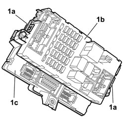

5505A10 JUNCTION UNIT - R+R
- Path
- Procedures > 55 ELECTRICAL EQUIPMENT > 5505 INSTRUMENT/GAUGE ELECTRICAL CIRCUITS > 5505A MULTI-FUNCTION COMPONENTS > 5505A10 JUNCTION UNIT - R+R
- Kind
- repair procedure (removal / refitting; the operation number is the code)
- Applies to
- all engines; all production periods
- Interactive page
- https://sloeber94.github.io/elrnDB-fCrm/en/#/194000667
Applies to: all engines; all production periods
Applies to: all engines; all production periods
 Removing
Removing
 Refitting
Refitting- Turn the ignition key to the OFF position.
- Disconnect the negative battery terminal.
- Wait for 10 minutes before continuing.
Connector | Description | |
|---|---|---|
BATTERY |
Op. 7040A24 LOWER FACIA COVER TRIM - R+R
Op. 5505A35 MAIN BODY COMPUTER/JUNCTION UNIT - R.R.
1. Release the retainers (1a) and separate the junction unit (1b) from the body computer (1c).

Applies to: all engines; all production periods
Refitting
Removing- Check that the junction unit is not damaged.
- At the bench, connect the junction unit to the body computer and attach the retainers.
Op. 5505A35 MAIN BODY COMPUTER/JUNCTION UNIT - R.R.
- Use an Examiner to check that the system has not acquired errors during the operation.
Op. 7040A24 LOWER FACIA COVER TRIM - R+R
- Test the operation of the electrical system.
- Connect the negative battery terminal.
Connector | Description | |
|---|---|---|
BATTERY |
Topics linked from this page (4)
- 5505A35 MAIN BODY COMPUTER/JUNCTION UNIT - R.R.
- 5580C AIR BAG SYSTEM
- 7040A24 LOWER FACIA COVER TRIM - R+R
- A001 BATTERY